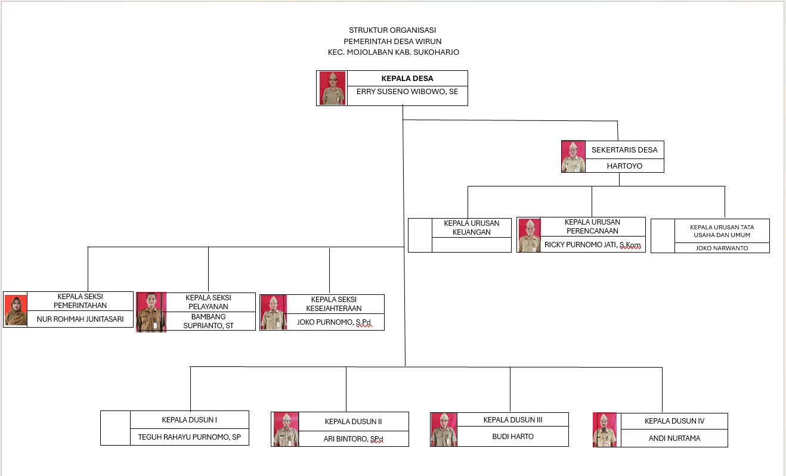

Daftar Desa · Kecamatan Mojolaban
Desa Wirun
Desa wisata dan sentra kerajinan gamelan; 7.904 penduduk pada 2024, urutan ketiga dari 15 desa di Mojolaban.
Penduduk 2024
Wirun adalah desa dengan penduduk terbanyak ketiga di Mojolaban setelah Palur dan Joho. Jumlah laki-laki dan perempuannya hampir sama persis. Data kependudukan terintegrasi di situs desa mencatat 7.870 jiwa pada 2026 (3.954 laki-laki, 3.916 perempuan).
Sumber: Dispendukcapil Kab. Sukoharjo, 2024 (situs luar); situs Desa Wirun (situs luar) (data 2026).
Sejarah dan potensi
Menurut situs Desa Wirun, Wirun merupakan salah satu desa wisata yang paling dikenal di Sukoharjo, dengan akses mudah dari Kota Solo dan Karanganyar, dan dikunjungi wisatawan lokal hingga mancanegara.
Potensi utamanya adalah kerajinan gamelan yang dikerjakan warga dan dikirim ke berbagai daerah di dalam dan luar negeri. Industri ini tercatat muncul sejak 1956, dirintis oleh Reso Wiguno, dan berkembang karena dorongan kebutuhan ekonomi. Selain gamelan, warga menekuni kain jumputan, wayang kertas, keris, genteng, batik kayu, dan budidaya bonsai.
Kesenian lokal seperti kethoprak, jathilan, dan karawitan disuguhkan untuk menyambut wisatawan. Wisatawan mancanegara, menurut situs desa didominasi warga Belanda, biasanya menetap satu sampai dua hari untuk belajar membuat gamelan dan wayang di rumah penduduk.
- Desa wisata
- Masuk 500 besar Anugerah Desa Wisata Indonesia (ADWI) 2023; terdaftar di Jadesta dengan kategori “Berkembang”
- Seni & budaya
- Kethoprak, karawitan, keroncong, reog, jathilan, wayang orang
- Kuliner khas
- Bakmi Jawa
Sumber: Sejarah Desa, situs Desa Wirun (situs luar); Jadesta Kemenparekraf. Klaim seperti “pusat kerajinan gamelan terbesar di dunia” pada situs desa tidak dikutip di sini.
Visi dan misi
Visi
“Membangun Desa Wirun Lebih Maju dan Berbudaya”
Misi
Untuk meraih visi tersebut, dengan mempertimbangkan potensi serta hambatan internal maupun eksternal, Desa Wirun menyusun misi sebagai berikut:
- Mewujudkan dan mengembangkan kegiatan keagamaan untuk menambah keimanan dan ketakwaan kepada Tuhan Yang Maha Esa.
- Mewujudkan dan mendorong usaha kerukunan antar dan intern warga masyarakat yang disebabkan perbedaan agama, keyakinan, organisasi, dan lainnya dalam suasana saling menghargai dan menghormati.
- Membangun dan meningkatkan hasil pertanian dengan penataan pengairan, perbaikan jalan sawah, jalan usaha tani, pemupukan, dan pola tanam yang baik.
Perangkat desa

| Jabatan | Nama |
|---|---|
| Kepala Desa | Erry Suseno Wibowo, S.E. |
| Sekretaris Desa | Hartoyo |
| Kaur Keuangan | Ari Bintoro, S.Pd. |
| Kaur Tata Usaha dan Umum | Joko Narwanto |
| Kaur Perencanaan | Ricky Purnomo Jati, S.Kom. |
| Kasi Pemerintahan | Nur Rohmah Junitasari, A.Md. |
| Kasi Pelayanan | Bambang Suprianto, S.T. |
| Kasi Kesejahteraan | Joko Purnomo, S.Pd. |
| Kepala Dusun I | Teguh Rahayu Purnomo, S.P. |
| Kepala Dusun II | Ari Bintoro, S.Pd. |
| Kepala Dusun III | Budi Harto |
| Kepala Dusun IV | Andi Nurtama |
Sumber: Struktur Organisasi, situs Desa Wirun (situs luar). Ari Bintoro, S.Pd. tercatat sebagai Kaur Keuangan sekaligus Kepala Dusun II. Dokumen kecamatan tahun 2022: PDF (situs luar).
Kedudukan, tugas, dan fungsi perangkat
01Kepala Desa
Tugas: Menyelenggarakan pemerintahan desa, melaksanakan pembangunan desa, pembinaan kemasyarakatan desa, dan pemberdayaan masyarakat desa.
- Menyelenggarakan pemerintahan desa: tata praja pemerintahan, penetapan peraturan di desa, pembinaan masalah pertanahan, pembinaan ketenteraman dan ketertiban, administrasi kependudukan, serta penataan dan pengelolaan wilayah.
- Melaksanakan pembangunan: sarana prasarana perdesaan, serta bidang pendidikan dan kesehatan.
- Pembinaan kemasyarakatan: pelaksanaan hak dan kewajiban masyarakat, partisipasi masyarakat, keagamaan, dan ketenagakerjaan.
- Pemberdayaan masyarakat: sosialisasi dan motivasi masyarakat di bidang budaya, ekonomi, politik, lingkungan hidup, pemberdayaan keluarga, pemuda, olahraga, dan karang taruna.
- Menjaga hubungan kemitraan dengan lembaga masyarakat dan lembaga lainnya.
02Sekretariat Desa
Tugas: Membantu Kepala Desa dalam bidang administrasi pemerintahan.
- Urusan ketatausahaan: tata naskah, administrasi surat menyurat, arsip, dan ekspedisi.
- Urusan umum: penataan administrasi perangkat desa, penyediaan prasarana perangkat desa dan kantor, penyiapan rapat, pengadministrasian aset, inventarisasi, perjalanan dinas, dan pelayanan umum.
- Urusan keuangan: administrasi keuangan, sumber pendapatan dan pengeluaran, verifikasi administrasi keuangan, serta administrasi penghasilan Kepala Desa, Perangkat Desa, BPD, dan lembaga pemerintahan desa lainnya.
- Urusan perencanaan: menyusun rencana anggaran pendapatan dan belanja desa, menginventarisasi data pembangunan, monitoring dan evaluasi program, serta penyusunan laporan.
03Kepala Urusan
Tugas: Membantu Sekretaris Desa dalam urusan pelayanan administrasi pendukung pelaksanaan tugas-tugas pemerintahan.
- Kaur Tata Usaha dan Umum: ketatausahaan, penataan administrasi perangkat desa, penyediaan prasarana, penyiapan rapat, pengadministrasian aset, inventarisasi, perjalanan dinas, dan pelayanan umum.
- Kaur Keuangan: administrasi keuangan, sumber pendapatan dan pengeluaran, verifikasi administrasi keuangan, serta administrasi penghasilan perangkat dan lembaga desa.
- Kaur Perencanaan: menyusun rencana APBDes, menginventarisasi data pembangunan, monitoring dan evaluasi program, serta penyusunan laporan.
04Kepala Seksi
Tugas: Membantu Kepala Desa sebagai pelaksana tugas operasional.
- Kasi Pemerintahan: tata praja pemerintahan, rancangan regulasi desa, pertanahan, ketenteraman dan ketertiban, perlindungan masyarakat, kependudukan, penataan wilayah, serta pendataan profil desa.
- Kasi Kesejahteraan: pembangunan sarana prasarana perdesaan, pendidikan dan kesehatan, serta sosialisasi dan motivasi masyarakat di bidang budaya, ekonomi, politik, lingkungan hidup, keluarga, pemuda, olahraga, dan karang taruna.
- Kasi Pelayanan: penyuluhan pelaksanaan hak dan kewajiban masyarakat, partisipasi masyarakat, pelestarian nilai sosial budaya, keagamaan, dan ketenagakerjaan.
05Kepala Dusun
Tugas: Membantu Kepala Desa dalam pelaksanaan tugasnya di wilayahnya.
- Pembinaan ketenteraman dan ketertiban, perlindungan masyarakat, mobilitas kependudukan, serta penataan dan pengelolaan wilayah.
- Mengawasi pelaksanaan pembangunan di wilayahnya.
- Pembinaan kemasyarakatan untuk meningkatkan kesadaran masyarakat dalam menjaga lingkungannya.
- Upaya pemberdayaan masyarakat untuk menunjang kelancaran penyelenggaraan pemerintahan dan pembangunan.
Data kependudukan 2026
Menurut pendidikan
- Tidak/belum sekolah1.424
- Belum tamat SD840
- Tamat SD/sederajat1.346
- Tamat SMP/sederajat1.420
- Tamat SMA/sederajat2.165
- Diploma I/II28
- Akademi/D-III206
- D-IV/S-1456
- S-227
- S-31
| Pendidikan | Laki-laki | Perempuan | Jumlah |
|---|---|---|---|
| Tidak/belum sekolah | 713 | 711 | 1.424 |
| Belum tamat SD | 408 | 432 | 840 |
| Tamat SD/sederajat | 619 | 727 | 1.346 |
| Tamat SMP/sederajat | 723 | 697 | 1.420 |
| Tamat SMA/sederajat | 1.140 | 1.025 | 2.165 |
| Diploma I/II | 10 | 18 | 28 |
| Akademi/D-III | 88 | 118 | 206 |
| D-IV/S-1 | 232 | 224 | 456 |
| S-2 | 14 | 13 | 27 |
| S-3 | 0 | 1 | 1 |
| Status | Laki-laki | Perempuan | Jumlah |
|---|---|---|---|
| Belum kawin | 1.803 | 1.454 | 3.257 |
| Kawin | 1.993 | 2.048 | 4.041 |
| Cerai hidup | 51 | 85 | 136 |
| Cerai mati | 72 | 299 | 371 |
Sumber: Data Kependudukan Terintegrasi, situs Desa Wirun (situs luar). Jumlah tiap tabel dapat berbeda dari total penduduk karena waktu pengambilan data berbeda.
Pertanian, peternakan, dan BUMDes
- BUMDes
- Bintang Wijaya (ketua: Purwanto): penjualan ATK dan sembako, persewaan molen
- Area wisata
- Cagar budaya seluas 1 ha, aktif dimanfaatkan
Sumber: Pidekso Terintegrasi (tahun pelaporan 2025) dan Data Lembaga Ekonomi, situs Desa Wirun. Satuan produksi telur tidak dicantumkan pada sumber.
Rumah ibadah dan tokoh agama
Sumber: berkas data gereja serta data masjid dan tokoh agama, situs resmi kecamatan. Rincian: masjid, gereja, tokoh agama.
Lokasi
Lokasi wisata di Desa Wirun
Tempat yang dapat dikunjungi, dari sentra gamelan hingga embung keluarga.
:quality(30):format(webp):focal(0.5x0.5:0.5x0.5)/solo/foto/bank/originals/Embung-Pengantin-yang-berada-di-Desa-Wirun.jpg)
Foto: Tribunnews Embung Pengantin
Taman embung untuk wisata keluarga di belakang SPBU Wirun: jembatan bambu, gazebo, perahu motor, sepeda bebek air, dan kolam renang anak.

Foto: Indonesia Kaya Sentra Kerajinan Gamelan
Belasan besalen (bengkel perajin). Pengunjung dapat melihat proses tradisional dari peleburan, penempaan, hingga penyetelan nada.

Foto: Tribunnews Sahasra Adhi Pura
Pura tempat meditasi umat Hindu di Mojolaban yang juga dikunjungi wisatawan.

Foto: Kompas Perajin Wayang Kertas “Mbah Brambang”
Membuat wayang kertas sejak 1965; hasilnya dikirim hingga ke luar negeri.
Foto milik media yang disebutkan dan dimuat dari situs aslinya.